Tunnel of Light
- Media artist : 유환 (YOUHWAN)
- Sound: Neo303, 한재석
- Venue: Ttukseom Hangang Park
- Host & Organizer: Seoul Special City.
빛의 터널
《빛의 터널》은 대한민국 서울 한강변에 위치한 장소 특정적 미디어아트 설치 작품이다. 이 작업은 고가 철도 아래에 설치되어, 열차의 물리적 이동과 디지털 흐름이 교차하는 동시대의 환경에 반응하며 “우리는 어디에 있으며, 어떻게 존재하는가?”라는 질문에서 출발한다.
작품은 열차가 출발하는 순간 작동된다. 움직이는 열차에서 발생하는 진동과 소리는 실시간으로 감지되어 빛과 사운드의 흐름으로 변환된다. 관객은 터널을 통과하며 빠르게 흘러가는 도시의 리듬에서 잠시 벗어나, 정지와 이동 사이의 감각을 새롭게 인식하게 된다. 평소에는 단순한 소음으로 인식되던 열차의 통과는 감각적으로 재구성되고, 이를 통해 관객은 자신이 놓여 있는 환경 속에서의 존재와 위치를 다시 사유하게 된다.
Tunnel of Light
Tunnel of Light Tunnel of Light is a site-specific media art installation located along the Han River in Seoul, the capital of South Korea. Installed beneath an elevated railway, the work responds to contemporary conditions in which material movement and digital flows intersect, beginning with the question: “Where are we, and how do we exist?” The work is activated at the moment a train departs. The vibrations and sounds generated by the moving train are captured in real time and translated into a flow of light and sound. As viewers move through the tunnel, they step away from the accelerated rhythm of the city and become newly aware of the space between stillness and movement. What is normally perceived as mere noise—the passing of the train—is sensorially reconfigured, prompting viewers to reflect on their own presence and position within the environment.View Detail →
LIGHT TUNNEL — Site-specific Installation
Jayang Overpass, Seoul · Interactive lighting & laser
corridor


 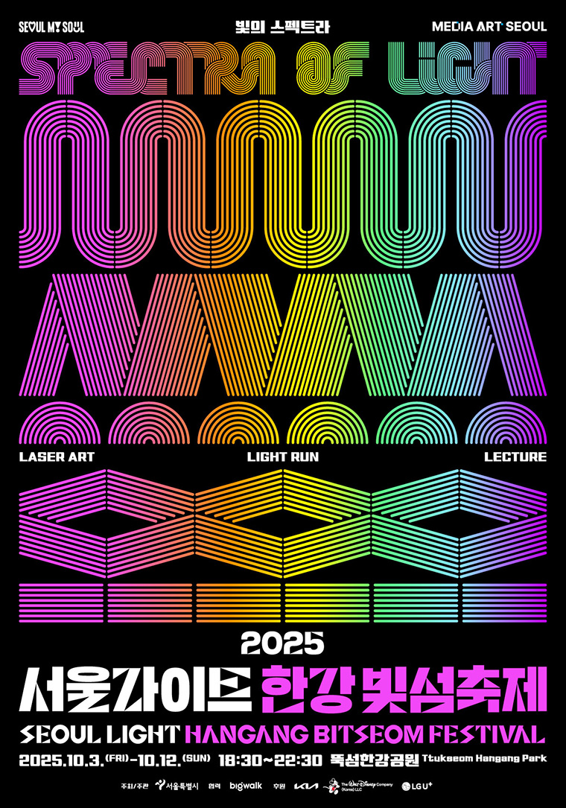
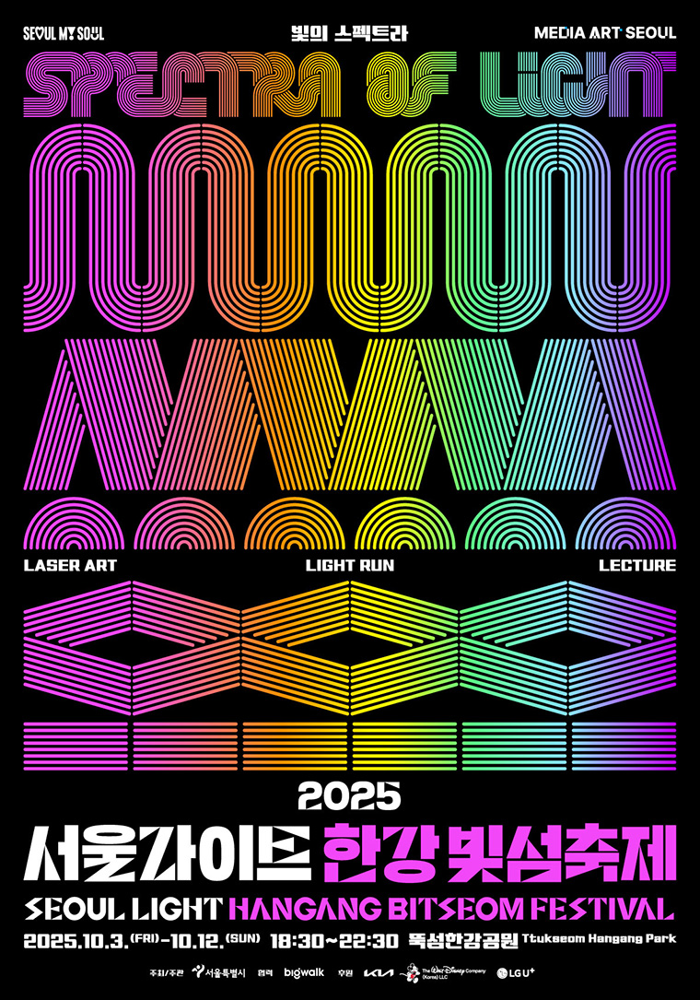
 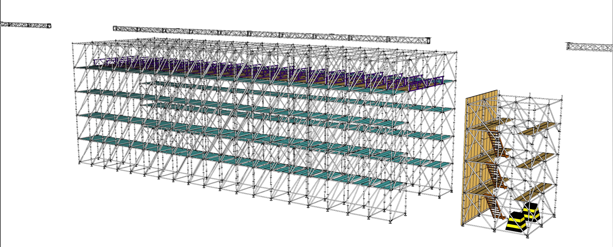
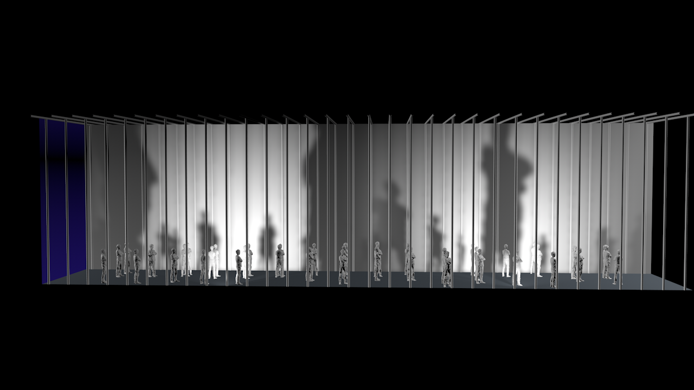
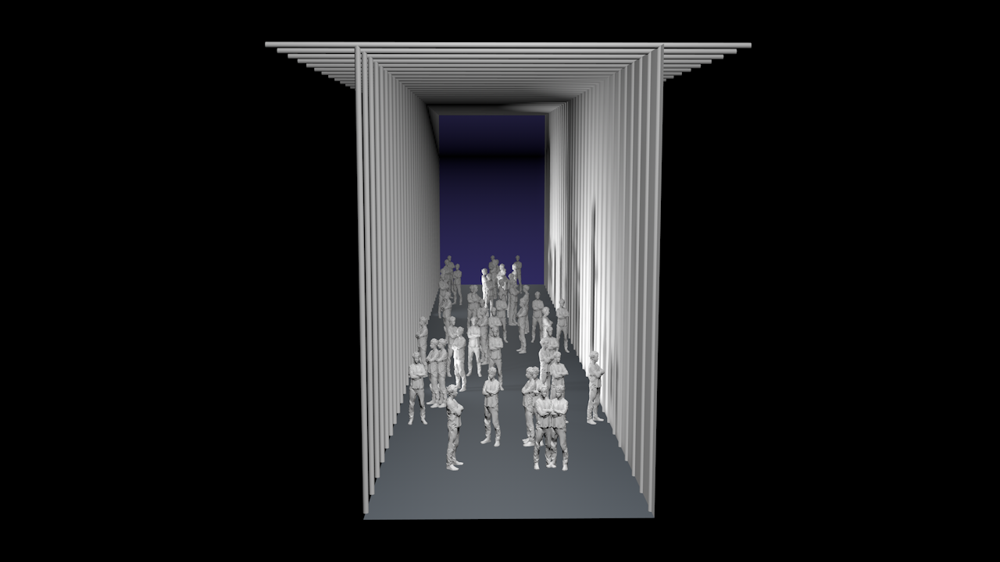
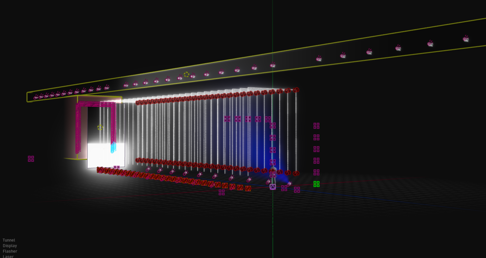
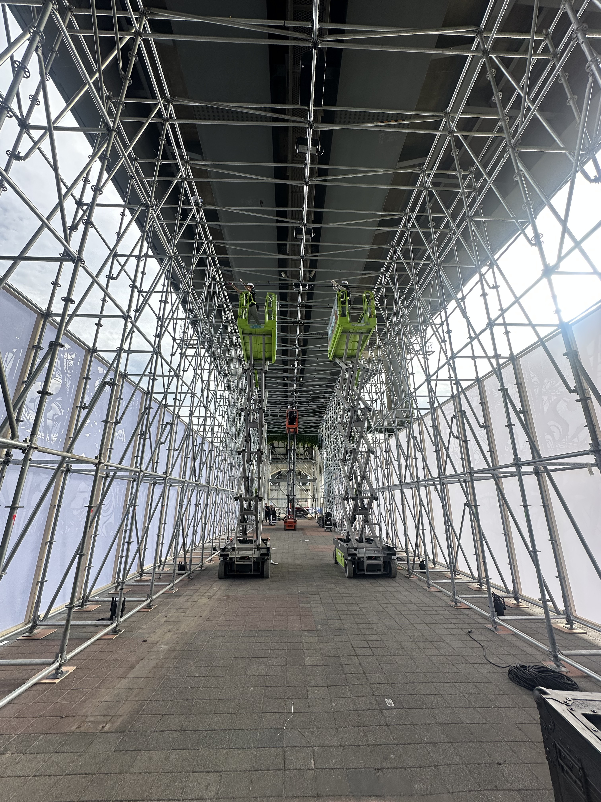
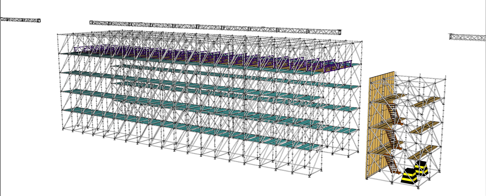
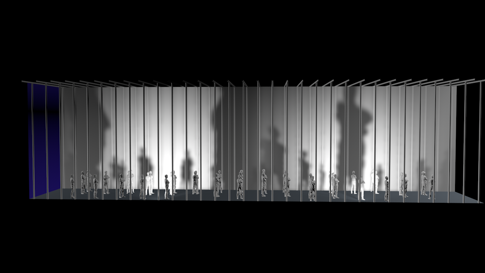
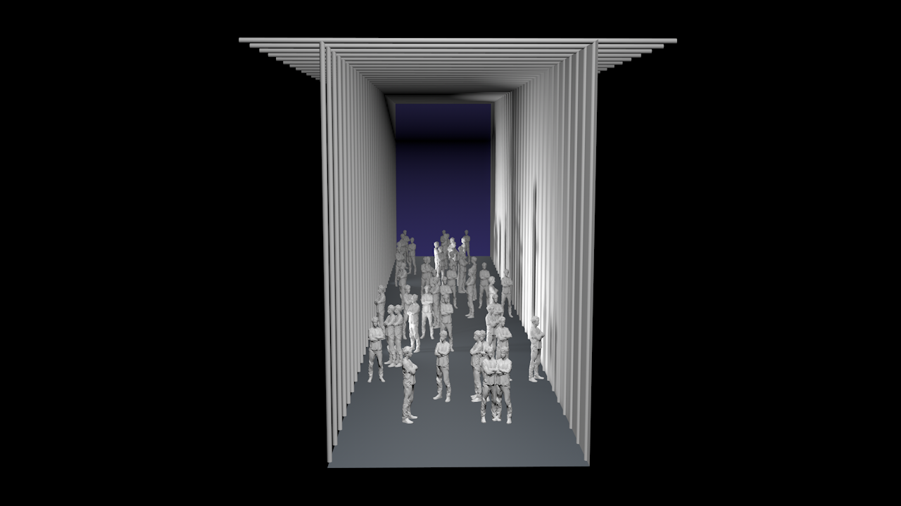
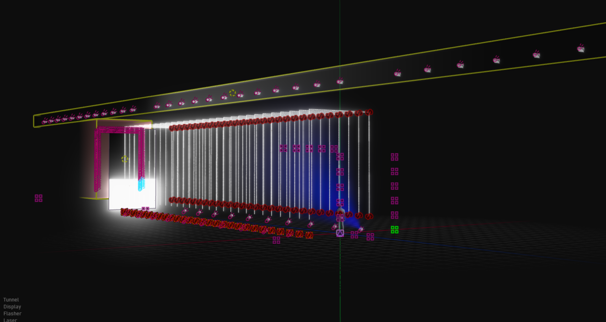
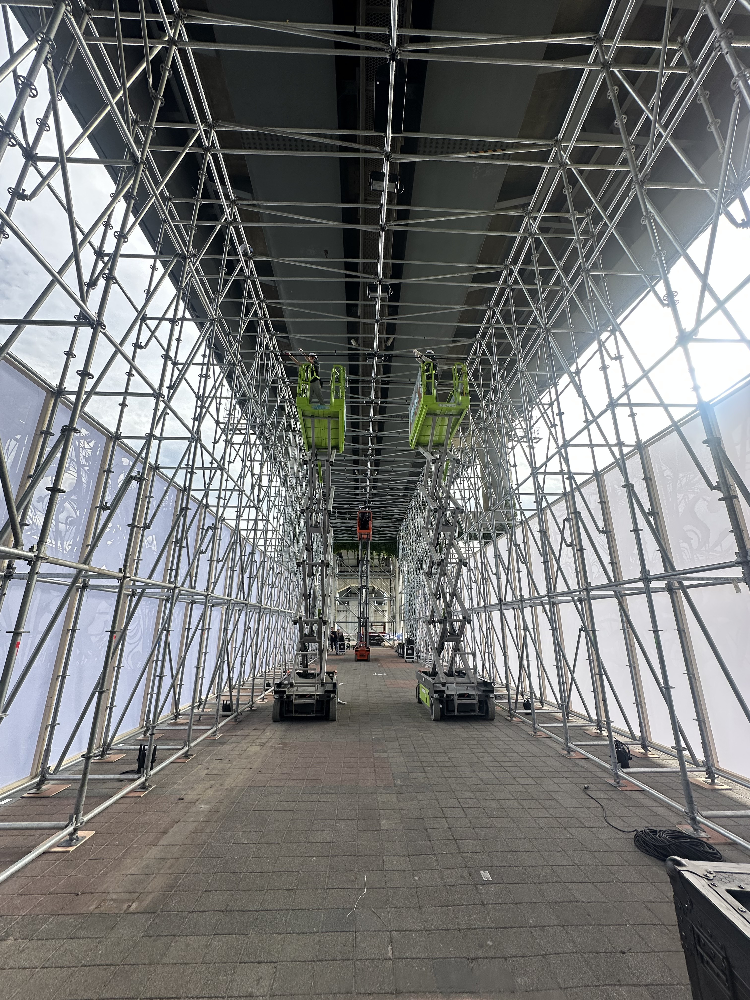